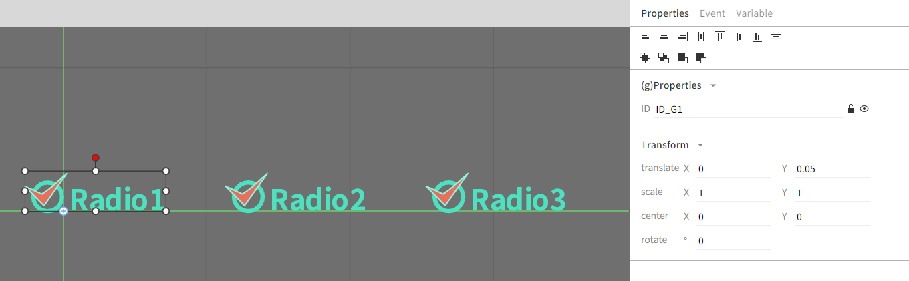

enuSpace-Meta Component (Window Control)
Window Control 제작
본 문서는 enuSpace-Meta 웹 그래픽 편집기를 이용하여 윈도우에서 사용하는 체크박스, 라디오 버튼 컴포넌트를 제작하고 픽처에서 활용하는 방법에 대하여 기술한다.
Component 제작
RadioBox 제작
HMI 라이브러리 파일에 Add Symbol 팝업메뉴를 통하여 Radiobox 심볼을 생성한다. 생성된 심볼에 멤버변수를 생성한다. 멤버변수는 체크 상태를 확인할 수 있는 boolean 변수와 컴포넌트의 라벨을 설정할 수 있는 변수를 생성한다.

웹 그래픽 편집기의 Project Explorer에서 라이브러리 svg 파일을 선택하여 팝업메뉴 Show Code를 통하여 생성된 내용을 확인할 수 있다.
...
<pg-attribute type="string" variable="m_label1" initial="Radio1" desc="" source-type="local"></pg-attribute>
<pg-attribute type="string" variable="m_label2" initial="Radio2" desc="" source-type="local"></pg-attribute>
<pg-attribute type="string" variable="m_label3" initial="Radio3" desc="" source-type="local"></pg-attribute>
<pg-attribute type="int" variable="m_number" initial="1" desc="" source-type="local"></pg-attribute>
... 계속
그래픽 객체를 생성하여 아래 그림과 같이 화면을 구성한다.
구성된 화면에 멤버변수와 연계할 텍스트 객체와 체크시 체크여부를 확인할 수 있는 객체를 생성하고 다음과 같이 설정한다.

그래픽 객체와 멤버변수 설정이 완료되었으면, 스크립트를 이용하여 컴포넌트의 기능을 구현한다.
컴포넌트의 멤버변수 값을 SetAttribute 수행시 호출 되는 _onload()함수에 아래 그림과 같이 객체와 변수를 할당한다.
function _onload()
ID_TITLE1.text = m_label1
ID_TITLE2.text = m_label2
ID_TITLE3.text = m_label3
radioclick(m_number)
end
function radioclick(number)
if (number == 0) then
ID_CHK1.visibility = true
ID_CHK2.visibility = false
ID_CHK3.visibility = false
elseif (number == 1) then
ID_CHK1.visibility = false
ID_CHK2.visibility = true
ID_CHK3.visibility = false
else
ID_CHK1.visibility = false
ID_CHK2.visibility = false
ID_CHK3.visibility = true
end
end
컴포넌트를 클릭하였을 경우, 체크 상태정보를 변경하기 위한 스크립트를 _onclick()함수에 추가한다. 클릭이벤트 발생시 멤버변수값을 변경하고, 변경된 값을 기반으로 그래픽 객체의 Visibility 속성을 변경한다.
function _onclick()
m_number = 0
radioclick(m_number)
end
function _onclick()
m_number = 1
radioclick(m_number)
end
function _onclick()
m_number = 2
radioclick(m_number)
end
RadioBox 활용하기
생성된 컴포넌트를 HMI메뉴를 선택, 추가된 컴포넌트를 선택하여 Picture 화면에 추가를 수행한다. Picture 화면에서 추가된 컴포넌트를 선택하고 객체를 인지할 수 있는 ID로 변경, SetAttribure를 통하여 등록된 멤버변수의 라벨값을 변경한다.
실제 런타임 중에 체크상태 값을 가져오기 위해서는 앞에서 설정한 ID와 추가한 m_number 통하여 데이터를 가져올수 있다. ID를 ID_RADIO 변경하였을 경우 ID_RADIO.m_number 변수를 통하여 확인 가능하다.
RadioBox 컴포넌트 (코드)
<?xml version="1.0" encoding="UTF-16"?>
<svg id="ID_fFNLsA" visibility="visible" lock="false" gradient="false" stroke="rgb(0,119,189)" stroke-opacity="1" stroke-width="1" transform="translate(0,0) rotate(0) scale(1,1)" pg-xcenter="0" pg-ycenter="0" stroke-visibility="visible" stroke-linecap="butt" stroke-linejoin="miter"
EnuSpaceMetaCore-version="1.0.0.0"
xmlns="http://www.w3.org/2000/svg"
xmlns:xlink="http://www.w3.org/1999/xlink"
width="1920"
height="1080"
outside-color="rgb(0,0,0)"
background-color="rgb(255,255,255)" grid="false" grid-dash="false">
<defs id="ID_fFNLsA0">
<symbol id="radiobox3" visibility="visible" lock="false" gradient="false" stroke="rgb(0,119,189)" stroke-opacity="1" stroke-width="1" transform="translate(0,0) rotate(0) scale(2.14359,2.14359)" pg-xcenter="0" pg-ycenter="0" stroke-visibility="visible" stroke-linecap="butt" stroke-linejoin="miter" onload="_onload()" background-color="rgb(111, 111, 111)" grid="true" x-offset="100" y-offset="100" grid-color="rgb(66, 66, 66)" grid-color-opacity="0.43" grid-dash="false">
<script id="ID_fFa8vo" type="text/lua">
<![CDATA[function radioclick(number)
if (number == 0) then
ID_CHK1.visibility = true
ID_CHK2.visibility = false
ID_CHK3.visibility = false
elseif (number == 1) then
ID_CHK1.visibility = false
ID_CHK2.visibility = true
ID_CHK3.visibility = false
else
ID_CHK1.visibility = false
ID_CHK2.visibility = false
ID_CHK3.visibility = true
end
end
function _onload()
ID_TITLE1.text = m_label1
ID_TITLE2.text = m_label2
ID_TITLE3.text = m_label3
radioclick(m_number)
end]]>
</script>
<pg-attribute type="string" variable="m_label1" initial="Radio1" desc="" source-type="local"></pg-attribute>
<pg-attribute type="string" variable="m_label2" initial="Radio2" desc="" source-type="local"></pg-attribute>
<pg-attribute type="string" variable="m_label3" initial="Radio3" desc="" source-type="local"></pg-attribute>
<pg-attribute type="int" variable="m_number" initial="1" desc="" source-type="local"></pg-attribute>
<g id="ID_G1" visibility="visible" lock="false" gradient="false" stroke="rgb(0,119,189)" stroke-opacity="1" stroke-width="1" transform="translate(0,0.049818) rotate(0) scale(1,1)" pg-xcenter="0" pg-ycenter="0" stroke-visibility="visible" stroke-linecap="butt" stroke-linejoin="miter" onclick="_onclick()">
<script id="ID_fFRLwl" type="text/lua">
<![CDATA[function _onclick()
m_number = 0
radioclick(m_number)
end]]>
</script>
<rect id="ID_CIRCLE1" visibility="visible" lock="false" gradient="false" stroke="rgb(75,226,192)" stroke-opacity="1" stroke-width="3" transform="translate(-21.0118,-19.9639) rotate(0) scale(1,1)" pg-xcenter="0" pg-ycenter="0" stroke-visibility="visible" stroke-linecap="butt" stroke-linejoin="miter" x="0" y="0" width="20" height="20" rx="10" ry="10" fill-visibility="hidden" fill="rgb(0,174,238)" fill-opacity="1"></rect>
<text id="ID_TITLE1" visibility="visible" lock="false" gradient="false" stroke="rgb(75,226,192)" stroke-opacity="1" stroke-width="1" transform="translate(3.53196,-0.332887) rotate(0) scale(1,1)" pg-xcenter="0" pg-ycenter="0" stroke-visibility="visible" stroke-linecap="butt" stroke-linejoin="miter" x="0" y="0" dx="0" dy="0" font-family="NotoSansKR" font-size="20" font-weight="bold" font-style="normal" text-anchor="start" baseline-shift="0" baseline-height="0" fill="rgb(0,174,238)" fill-opacity="1" text-decoration="none" pg-line-count="1" pg-oneline-height="0">
Radio1
</text>
<polygon id="ID_CHK1" visibility="hidden" lock="false" gradient="false" stroke="rgb(142, 244, 220)" stroke-opacity="1" stroke-width="1" transform="translate(-27.243,-14.743) rotate(0) scale(1,1)" pg-xcenter="0" pg-ycenter="0" stroke-visibility="visible" stroke-linecap="round" stroke-linejoin="round" points="0.368538,-2.57977 13.6453,11.012 29.4452,-11.4908 17.4788,-0.841024 12.146,2.86955" fill-visibility="visible" fill="rgb(237, 109, 92)" fill-opacity="1"></polygon>
</g>
<g id="ID_G2" visibility="visible" lock="false" gradient="false" stroke="rgb(0,119,189)" stroke-opacity="1" stroke-width="1" transform="translate(140,0) rotate(0) scale(1,1)" pg-xcenter="0" pg-ycenter="0" stroke-visibility="visible" stroke-linecap="butt" stroke-linejoin="miter" onclick="_onclick()">
<script id="ID_fFRLwl" type="text/lua">
<![CDATA[function _onclick()
m_number = 1
radioclick(m_number)
end]]>
</script>
<rect id="ID_CIRCLE2" visibility="visible" lock="false" gradient="false" stroke="rgb(75,226,192)" stroke-opacity="1" stroke-width="3" transform="translate(-21.0118,-19.9639) rotate(0) scale(1,1)" pg-xcenter="0" pg-ycenter="0" stroke-visibility="visible" stroke-linecap="butt" stroke-linejoin="miter" x="0" y="0" width="20" height="20" rx="10" ry="10" fill-visibility="hidden" fill="rgb(0,174,238)" fill-opacity="1"></rect>
<text id="ID_TITLE2" visibility="visible" lock="false" gradient="false" stroke="rgb(75,226,192)" stroke-opacity="1" stroke-width="1" transform="translate(3.53196,-0.332887) rotate(0) scale(1,1)" pg-xcenter="0" pg-ycenter="0" stroke-visibility="visible" stroke-linecap="butt" stroke-linejoin="miter" x="0" y="0" dx="0" dy="0" font-family="NotoSansKR" font-size="20" font-weight="bold" font-style="normal" text-anchor="start" baseline-shift="0" baseline-height="0" fill="rgb(0,174,238)" fill-opacity="1" text-decoration="none" pg-line-count="1" pg-oneline-height="0">
Radio2
</text>
<polygon id="ID_CHK2" visibility="visible" lock="false" gradient="false" stroke="rgb(142, 244, 220)" stroke-opacity="1" stroke-width="1" transform="translate(-27.243,-14.743) rotate(0) scale(1,1)" pg-xcenter="0" pg-ycenter="0" stroke-visibility="visible" stroke-linecap="round" stroke-linejoin="round" points="0.368538,-2.57977 13.6453,11.012 29.4452,-11.4908 17.4788,-0.841024 12.146,2.86955" fill-visibility="visible" fill="rgb(237, 109, 92)" fill-opacity="1"></polygon>
</g>
<g id="ID_G3" visibility="visible" lock="false" gradient="false" stroke="rgb(0,119,189)" stroke-opacity="1" stroke-width="1" transform="translate(280,0) rotate(0) scale(1,1)" pg-xcenter="0" pg-ycenter="0" stroke-visibility="visible" stroke-linecap="butt" stroke-linejoin="miter" onclick="_onclick()">
<script id="ID_fFRLwl" type="text/lua">
<![CDATA[function _onclick()
m_number = 2
radioclick(m_number)
end]]>
</script>
<rect id="ID_CIRCLE3" visibility="visible" lock="false" gradient="false" stroke="rgb(75,226,192)" stroke-opacity="1" stroke-width="3" transform="translate(-21.0118,-19.9639) rotate(0) scale(1,1)" pg-xcenter="0" pg-ycenter="0" stroke-visibility="visible" stroke-linecap="butt" stroke-linejoin="miter" x="0" y="0" width="20" height="20" rx="10" ry="10" fill-visibility="hidden" fill="rgb(0,174,238)" fill-opacity="1"></rect>
<text id="ID_TITLE3" visibility="visible" lock="false" gradient="false" stroke="rgb(75,226,192)" stroke-opacity="1" stroke-width="1" transform="translate(3.53196,-0.332887) rotate(0) scale(1,1)" pg-xcenter="0" pg-ycenter="0" stroke-visibility="visible" stroke-linecap="butt" stroke-linejoin="miter" x="0" y="0" dx="0" dy="0" font-family="NotoSansKR" font-size="20" font-weight="bold" font-style="normal" text-anchor="start" baseline-shift="0" baseline-height="0" fill="rgb(0,174,238)" fill-opacity="1" text-decoration="none" pg-line-count="1" pg-oneline-height="0">
Radio3
</text>
<polygon id="ID_CHK3" visibility="hidden" lock="false" gradient="false" stroke="rgb(142, 244, 220)" stroke-opacity="1" stroke-width="1" transform="translate(-27.243,-14.743) rotate(0) scale(1,1)" pg-xcenter="0" pg-ycenter="0" stroke-visibility="visible" stroke-linecap="round" stroke-linejoin="round" points="0.368538,-2.57977 13.6453,11.012 29.4452,-11.4908 17.4788,-0.841024 12.146,2.86955" fill-visibility="visible" fill="rgb(237, 109, 92)" fill-opacity="1"></polygon>
</g>
</symbol>
</defs>
</svg>